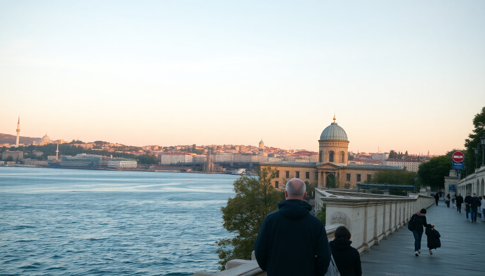

Best Day Trips from Istanbul: Bosphorus, Princes' Islands & Bursa

I’ve done the Istanbul day-trip circuit more times than I care to count, and these three routes are the ones I keep coming back to—not because they’re “hidden gems,” but because they actually deliver a clear change of pace without eating up half your vacation in transit. The Bosphorus cruise is the classic, the Princes’ Islands are a car-free escape, and Bursa gives you a real taste of Ottoman Turkey. Here’s what I learned the hard way so you don’t have to.
What’s the best way to do a Bosphorus day cruise?
The Bosphorus strait splits Istanbul into Europe and Asia, and the ferry ride is the most practical way to see both shorelines in a few hours. Skip the private tourist boats charging €50—take the public Şehir Hatları ferries instead. They run from Eminönü and Karaköy piers, cost about 40 TL one-way, and follow the same route as the expensive tours. I always grab a simit and tea from the kiosk at Eminönü before boarding.
- Board the Uzun Boğaz Turu (Long Bosphorus Tour) from Eminönü at 10:35 AM—it goes all the way to Anadolu Kavağı near the Black Sea.
- The ride takes roughly 90 minutes each way. You’ll pass Rumeli Hisarı fortress, Ortaköy mosque, and the Beylerbeyi Palace on the Asian side.
- At Anadolu Kavağı, you get about 2 hours to climb to Yoros Castle ruins for a panoramic view, then eat fresh fish at one of the waterfront restaurants. I’ve had decent luck at Kavaklı Restoran—nothing fancy, but the grilled sea bass is solid.
- Return ferry leaves around 3:30 PM. Bring sunscreen; the upper deck is exposed and the sun gets fierce by noon.
I’ve done this trip four times now, and the only real tip is to sit on the right side of the boat going up (you get the European palaces) and left side coming back (Asian hillsides). The whole thing runs about 5 hours including the stop. No audio guide needed—just watch the skyline change.
Are the Princes’ Islands worth a full day?
Yes, but only if you like biking, walking, and dodging horse-drawn carriages. The Princes’ Islands are a cluster of nine islands in the Sea of Marmara, and Büyükada is the most popular because it’s the largest and has the best infrastructure. Cars are banned, so you get around by bicycle, on foot, or by hiring a phaeton. I’ve rented bikes from Yorgo’nun Yeri near the main pier—old-school cruisers for 100 TL for the day.
- Take the İDO fast ferry from Kadıköy or Kabataş to Büyükada. The fast ferry takes about 75 minutes; the slower Şehir Hatları ferry takes closer to 90 but costs half as much. I usually go from Kadıköy because the queues are shorter.
- Once on the island, bike up to Aya Yorgi Church at the top of the hill—it’s a steep climb but the view over the Marmara is the payoff. There’s a tiny café next to the church that sells cold ayran.
- For lunch, Milto Restaurant on the waterfront serves a decent meze plate and grilled octopus. It’s touristy but the location right on the pier is hard to beat.
- Avoid the horse carriages. The horses are often overworked in summer heat, and the smell isn’t great. Stick to two wheels or your own two feet.
I usually wrap up by 4 PM and catch the 4:30 PM ferry back. The islands get packed on weekends, so go on a weekday if you can. June and September are the sweet spots—July and August are sweltering and crowded.
How do I get to Bursa and what should I see there?
Bursa is the most ambitious day trip on this list—it’s a full-day commitment, but it’s the closest you’ll get to Ottoman-era Turkey without leaving the Marmara region. The city was the first Ottoman capital, and the Yeşil Cami (Green Mosque) and Yeşil Türbe (Green Tomb) are the headliners. I’ve done this trip twice, and the key is getting an early start.
- Take the İDO fast ferry from Yenikapı or Kabataş to Mudanya, the port town outside Bursa. The ferry runs about 2 hours. From Mudanya, hop on the BUDO bus (runs every 20 minutes) to Bursa city center—another 30 minutes.
- Once in Bursa, head straight to Koza Han, the old silk market in the covered bazaar. It’s a two-story courtyard with silk scarves, towels, and textiles. Prices are negotiable; I paid 150 TL for a decent silk scarf.
- Walk uphill to Ulu Cami (the Grand Mosque), then the Yeşil Cami complex. The tile work inside the Green Mosque is some of the finest I’ve seen outside of Iran.
- For lunch, İskender Kebap is the local specialty—sliced lamb over pide bread with tomato sauce and melted butter. Kebapçı İskender on Ünlü Caddesi is the original restaurant (since 1867). Expect a queue at lunch, but it moves fast. One portion with ayran runs about 300 TL.
- If you have time, ride the teleferik (cable car) up to Uludağ National Park. In winter it’s a ski resort; in summer it’s just a cooler mountain escape with pine forests. The round-trip cable car is 200 TL and takes 20 minutes each way.
The last ferry back to Istanbul from Mudanya is usually around 7:30 PM. Don’t miss it—the next one is the next morning. I missed it once and had to crash at a cheap hotel near the port. Not the end of the world, but not ideal.
When is the best time of year for these day trips?
Late spring (May–June) and early autumn (September–October) are the sweet spots. The Bosphorus cruise is pleasant in any season, but the open deck is miserable in winter rain. Princes’ Islands are best in May or September—July and August are hot, and the bike rental queues can stretch 30 minutes. Bursa’s mosques are fine year-round, but the Uludağ cable car is closed in heavy fog (common in December–February). I’ve done all three in late May and had clear skies every time.
FAQ
Is it possible to do two day trips in one day from Istanbul? Not really. Each of these trips takes at least 5–6 hours door-to-door including transit. Trying to combine a Bosphorus cruise with the Princes’ Islands would mean rushing through both and missing the ferry back. Pick one per day and enjoy it slowly.
Do I need a visa for Bursa if I’m already in Istanbul? No. Bursa is in Turkey, same as Istanbul. If you’re a foreign tourist with a valid Turkish e-Visa or visa-free entry, you’re fine. No additional paperwork needed.
Which day trip is best for families with young kids? The Princes’ Islands. No cars means kids can bike safely on quiet roads, the ferry ride is short enough to avoid meltdowns, and there are plenty of ice cream stands and playgrounds along the waterfront. Büyükada’s main square has a small park with swings.
Conclusion
- Bosphorus cruise on the Şehir Hatları public ferry is the best value—5 hours, 40 TL, and you see both continents clearly.
- Princes’ Islands (Büyükada) are a car-free retreat best done on a weekday with a rented bike from Yorgo’nun Yeri.
- Bursa requires a full day and an early ferry, but the Green Mosque and İskender kebap are worth the logistics.
- Stick to May, June, or September for reliable weather and shorter queues.
- Don’t try to cram two trips into one day—the ferry schedules are fixed and missing the last boat back is a hassle.